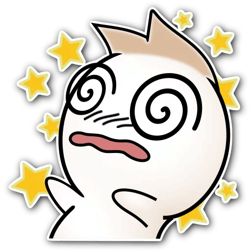
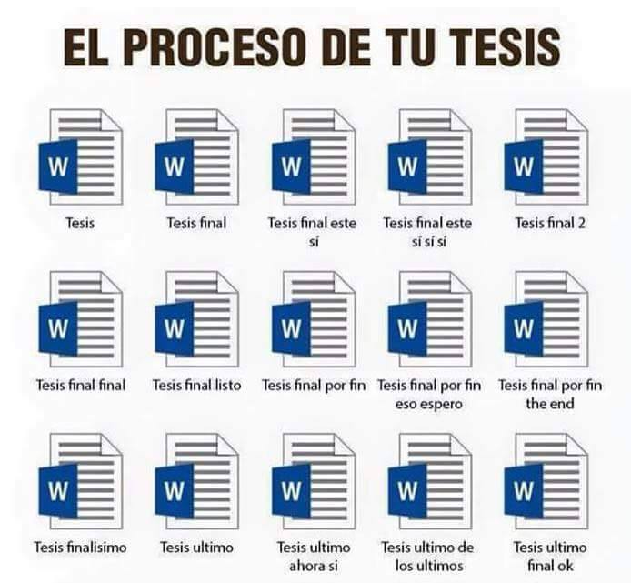

Git Crash Course
Kantar Marketing Sciences
Jhosse Paul Márquez Ruíz
Kantar Marketing Sciences
Jhosse Paul Márquez Ruíz
Git (pronunciado "guit" ) es un software de control de versiones diseñado por Linus Torvalds, pensando en la eficiencia y la confiabilidad del mantenimiento de versiones de aplicaciones cuando éstas tienen un gran número de archivos de código fuente.
GitHub es una plataforma de desarrollo colaborativo para alojar proyectos utilizando el sistema de control de versiones Git.
Version control is a system that records changes to a file or set of files over time so that you can recall specific versions later
En pocas palabras, si queremos dar un seguimiento a los cambios que hagamos sobre archivos de un proyecto y poder mantener diferentes versiones del mismo en diferentes computadoras y con un equipo colaborativo, es necesario usar un control de versiones.

Hay dos interfaces para Git, una CLI (Command Line Interface) y una GUI (Graphical User Interface). Es posible que estén tentados a usar la GUI, cegados por el temor a adentrarse en la matrix. Hay que ser claro: la GUI ofrece menos de la mitad del potencial que se puede aprovechar de Git. Siempre hay que trabajar Git desde una línea de comandos:
Super -> "Git Bash"
cd ~ # Change directory to home (~)
mkdir repository # Make a directory called repository
cd repository # Change directory to repository
git init # Start a brand new git repository
Parace que nada ha cambiado, sin embargo:
ls -la # List all (a) files with long (l) format
Podemos ver una carpeta llamada .git, lo cual nos indica que ya estamos usando Git
touch my-first-file.txt # Create a new file called my-first-file.txt
echo "First line" >> my-first-file.txt # Append "First line" text in the last line of the file
Ahora vamos a empezar a usar Git para rastrear los cambios en nuestros archivos. El comando "git status" nos da un resumen de los cambios que hemos efectuado desde nuestro último commit (más sobre esto a continuación)
git status
Como podemos ver, los archivos nuevos han sido detectados automaticamente. También arroja información relevante:
Mucho vocabulario nuevo!!!

En Git existen varias fases en el ciclo de vida del archivo:
A continuación vamos a ver como podemos migrar archivos de un estado a otro.
git add my-first-file.txt # Add my-first-file to the staged area
git status
Algunas variantes
git add . # Add all untracked and modified files to the repository
git add -Av # Add and list (v = verbose) all (A) untracked and modified files to the repository
Después de una cantidad considerable de cambios que cumplen con los objetivos de desarrollo que nos hemos planteado, e.g. un nuevo feature en nuestro paquete o programa, querremos hacer los cambios permanentes. A este milestone se le llama commit. Todos los archivos que se encuentren en el staging area conforman un commit. Los commit siempre van acompañados de un commit message, un timestamp, un hashkey único y el registro del autor de los cambios. Esto lo podemos ver con el comando git log.
git commit # Make changes permanent, open editor to write commit message
git commit -m "My first commit" # Make changes permanent with the given commit message (m)
echo "Second line" >> my-first-file.txt
git status
git add my-first-file.txt
git status
git commit -m "Second commit"
git status
git log
git log --oneline
No ahondaremos mucho en como revertir cambios de un repositorio. Pero aprovechamos para introducir el comando "help" para acceder a la documentación de Git.
git help reset # "reset" es el inverso a "add". Regresa en la historia del repositorio
git help revert # Crea un commit nuevo con un estado anterior de la historia del repositorio
git help checkout # Viajar en el tiempo y el espacio, incluyendo "branches"


Además de dar seguimiento a un solo proyecto, Git permite dar seguimiento a variaciones de un mismo proyecto sin salir del mismo repositorio. A cada variación del proyecto se le llama "branch" y se le da un seguimiento independiente hasta que decidamos juntar las ramas.
git checkout -b test # Create new branch "test"
git branch # List branches and current working branch
touch my-second-file.txt
echo "First line" >> my-second-file.txt
git add -Av
git commit -m "Great feature"
git checkout master
git merge test # Merge changes made in "test" with the current branch
git branch -d test # Delete (d) "test" branch
git init
git status
git log
git add
git commit
git reset
git revert
git checkout
git branch
Git permite una excelente integración de los cambios que hace un equipo a un proyecto. Para poder distribuir el trabajo entre varios colaboradores es necesario un repositorio remoto.
A esta gran red social de colaboración en el desarrollo de software se le conoce como Github. Hay otras, pero son más aburridas
Acá podemos encontrar al mismísimo Hadley, Dios, Wickham
Crear nuestro primer repositorio remoto es tan sencillo como entrar a nuestro perfil de Github y dar click en "New repository". Por el momento, solo indiquémos un nombre y marquémos el checkbox "Initialize this repository with a README". Ahora vamos a clonar nuestro nuevo repositorio. Click en "Clone or download", elegir el método HTTPS y copiar.
cd ~
git clone https://github.com/JhossePaul/curso_git.git # Clonar esta misma presentación
cd curso_git

Ahora tenemos un repositorio Git con todas las capacidades que ya conocemos. Sin embargo, ahora tenemos un área de trabajo más: Github, un repositorio remoto

echo "Hello, sexy Github World" >> README.md
git add README.md
git commit -m ":kiss: Sexy commit"
git push
Dentro del mismo Github modifiquemos el archivo README y luego...
git pull
Hasta aquí las aventuras con Octocat por el día de hoy